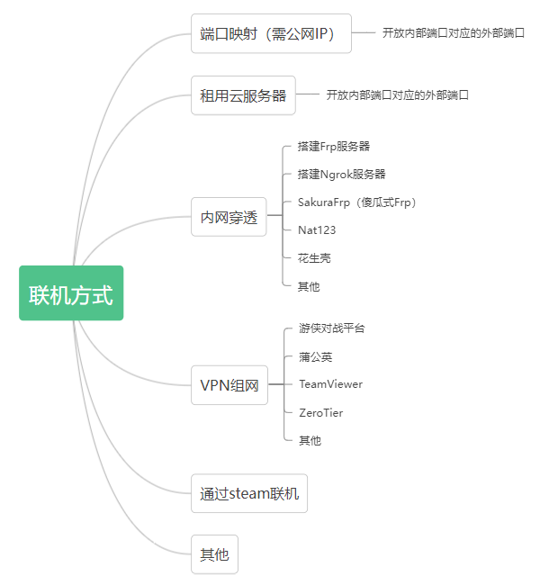
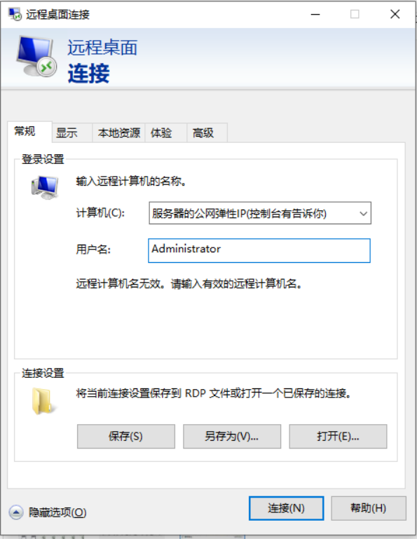
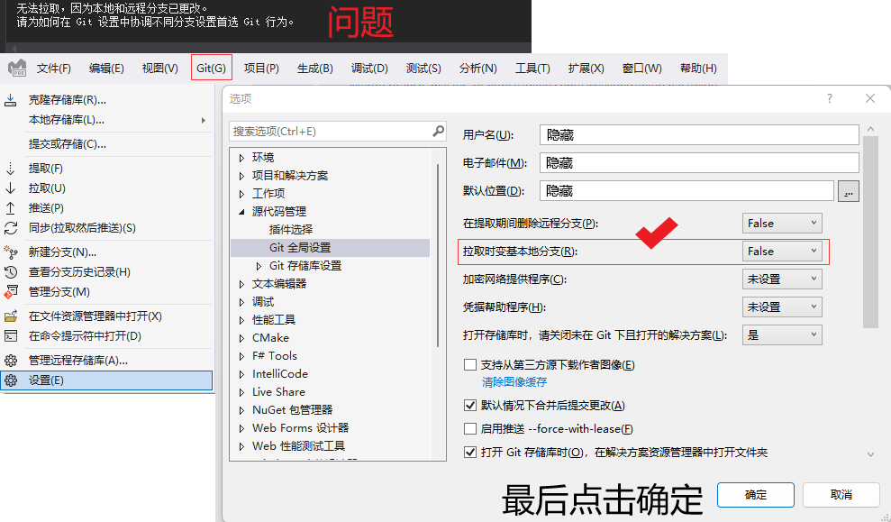
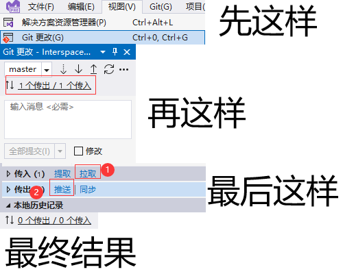

正在加载诗词....
推荐资源
以下代码由- 在线HTML编辑器 -提供模板
SIKI学院
Unity游戏引擎
Krita画图软件
与佛论禅
菜鸟教程
DogFight360
樱花映射(内网穿透)
Json在线校验
图片转图标
小幻IP代理
teamDB-INFO
饥荒云服工具
掌上饥荒
守望先锋创意工坊地图
Ping查询
MSDN我告诉你
Minecraft中文下载站
营销号生成器
我的世界皮肤站
恋恋的博客
裙子的模组制作
Terraria中文论坛
搜图工具
力扣
小飞兔整站工具
Steam++工具
Pixiv镜像
免费商业字体大全
字体版权查询
萌娘百科
移除图片背景
修复模糊图片
帮你找动漫
音虫-音乐制作
教程
C#
获取其他程序的句柄模拟键盘按键
using System; using System.Diagnostics; using System.Runtime.InteropServices; using System.Windows.Forms; namespace 命名空间 { internal class 项目 { [DllImport("user32.dll")] internal static extern int SetForegroundWindow(IntPtr ip);//获取窗口句柄 internal static void Main() { Process process = Process.GetProcessById(PID); SetForegroundWindow(process.MainWindowHandle); SendKeys.SendWait(""); // ^ = Ctrl // % = Alt // {按键 数字} = 按{按键}{数字}次 } } }内嵌类库(先将需内嵌的类库改为内嵌的资源)
AppDomain.CurrentDomain.AssemblyResolve += (sender, args) => { string name = "程序的命名空间.文件夹名." + new AssemblyName(args.Name).Name + ".dll"; var stream = Assembly.GetExecutingAssembly().GetManifestResourceStream(name); byte[] assData = new byte[stream.Length]; stream.Read(assData, 0, assData.Length); return Assembly.Load(assData); };解决WinForm程序未发现resource文件： 打开AssemblyInfo.cs文件并加入以下代码 [assembly: NeutralResourcesLanguage("zh-CN", UltimateResourceFallbackLocation.MainAssembly)]
提取内嵌的文件
internal class Extract { internal static void File(string fn, string of) { BufferedStream bs = null; FileStream fs = null; try { Assembly a = Assembly.GetExecutingAssembly(); bs = new BufferedStream(a.GetManifestResourceStream(fn)); fs = new FileStream(of, FileMode.Create, FileAccess.Write); byte[] buffer = new byte[1024]; int length; while ((length = bs.Read(buffer, 0, buffer.Length)) > 0) { fs.Write(buffer, 0, length); } fs.Flush(); } finally { if (fs != null) { fs.Dispose(); } if (bs != null) { bs.Dispose(); } } } }配置文件的写法
ini配置文件
需要调用kernel32.dll（但不需要引用） 请自行查询百度，此方法不推荐
json配置文件
需要调用Newtonsoft.Json.dll（可在VS的NuGet中下载）
// 用于读取配置文件 用法：👇 // 类名.Read("Json文件的对象名"); // { // "对象名":参数 //在json文件中 // } internal static dynamic Read(string keywords) { StreamReader sr = File.OpenText("config.json"); JsonTextReader jtr = new JsonTextReader(sr); JObject jo = (JObject)JToken.ReadFrom(jtr); dynamic value = (dynamic)jo[keywords]; sr.Dispose(); return value; } // 用于写入配置文件 用法：👇 // 类名.Write("Json文件的对象名", 新参数); // { // "对象名":旧参数 //在json文件中 // } internal static void Write(string keywords, dynamic newVaelue) { string str = File.ReadAllText("config.json"); dynamic jo = JsonConvert.DeserializeObject(str); jo[keywords] = newVaelue; File.WriteAllText("config.json", JsonConvert.SerializeObject(jo, Formatting.Indented)); } ------------------------------------ // 更多方法请查询该库的官方文档 // 创建一个“config.json”的文件，写入： { "对象名一": "字符串", "对象名二": 0， "对象名三": false }收集目录内含子目录的同一文件格式
using System; using System.IO; using System.Text; // The cs file was written by SweelLong // Usage: Download .NetFramework SDK, open the SDK directory, find "csc.exe" and open cs file by it. // the common path: // C:\Windows\Microsoft.NET\Framework\v4.0.30319\csc.exe // Alse you can start cmd or Windows PowerShell and types： // C:\Windows\Microsoft.NET\Framework\v4.0.30319\csc.exe C:\Users\14857\Desktop\MusicCollector.cs // After that you will get the exe file. // August 16th, 2022 namespace MusicCollector { public class MainClass { public static string OutputPath; public static StringBuilder AppendText; public static void Main() { AppendText = new StringBuilder(); Console.Write("Please types the full path of directory which you wanna collect files: \n>"); string InputPath = Console.ReadLine(); OutputPath = InputPath + "\\Output"; if (!Directory.Exists(OutputPath)) { Directory.CreateDirectory(OutputPath); } /* The core codes as follows: */ DirectoryInfo di = new DirectoryInfo(InputPath); GetFiles(di); DirectoryInfo[] dirs = di.GetDirectories(); foreach (var dir in dirs) { if(dir.Name == "Output") { continue; } GetFiles(dir); } Console.WriteLine("Success!"); Console.ReadKey(); } public static void GetFiles(DirectoryInfo di) { FileInfo[] files = di.GetFiles(); foreach (FileInfo file in files) { string FullName = file.FullName; // ogg is a format of Music. // Which is you wanna get. if (Path.GetExtension(FullName).Contains("ogg")) { try { File.Copy(FullName, OutputPath + "\\" + di.Name + ".ogg"); } catch { AppendText.Append("New"); File.Copy(FullName, OutputPath + "\\" + di.Name + AppendText.ToString() + ".ogg"); } Console.WriteLine("input: " + FullName); } } } } }常见的联机方式（初二时写的）
端口映射
教程使用IPV4，IPV6可能无法联机
先确保拥有公网IP
演示的设备：
光猫WAN口连接路由器WAN口
路由器LAN口连接计算机
TP-LINK路由器
电信光猫
开始----------------------------------------------------------------------------------------------------
进入路由器管理页面（一般为http://192.168.0.1），可以查看路由器说明书或路由器底部。
管理员密码可以尝试1234，123456，admin......也可以键位复原（百度，说明书有教程）
获取本机的局域网IP
WIN+R输入CMD打开输入ipconfig/all。如:
物理地址. . . . . . . . . . . . . : A1-2A-3A-A4-5A-A6
IPv4 地址 . . . . . . . . . . . . : 192.168.0.112（首选）
IP与MAC绑定，方便以后不需要修改虚拟服务器架设的局域网IP
一般IP与MAC映射表都会自动找出你的设备点击+即可
添加（路由器都差不多，自己摸索）
// 如果你觉得麻烦的话，可以选择跳过这一步
设置虚拟服务器，大概是这样

那么你的就端口映射成功了
创建DDNS域名（固定公网IP可跳过，可以将指定的域名-绑定你那重启就会更换的IP）
// 如果你觉得麻烦的话，可以选择跳过这这一步，直接通过公网IP加入
创建游戏服务器（下面是开游戏的服务端，内网穿透等通用）
打开Steam软件的位置%\steamapps\common\Terraria打开TerrariaServer
（tModLoader则打开tModLoaderrServer）
服务器启动成功后打开游戏-多人模式-通过IP加入-输入域名（或者IP）后即可加入
租用云服务器
以华为云，Windows Server 2019为例，Linux系统找度娘， 点击控制台-实例然后配置规则——入站规则——添加规则——端口全部开放或开放7777
然后打开Windows系统自带的远程桌面连接
 密码：控制台设置，更改密码后请重启服务器 在服务器中创建一个Terraria的文件夹，放入以下文件
安装xnafx40_redist 手动创建：文档-MyGames-Terraria-World
可放已有的存档或用TerrariaServer新建 然后在云服务器内用Terrariaserver开服即可 通过IP加入：输入弹性公网IP:7777
内网穿透
内网穿透软件都差不多，大部分是收费的。 推荐SakuraFrp，创建隧道完成后，剩余操作与端口映射相同VPN组网
推荐游侠对战平台，其原理便是组网 打开游侠对战平台游戏路径打开你steam上Terraria的路径，steam挂在后台，然后在游侠上点击开始游戏解决VS-Git的相关问题
《1.解决拉取-提取失败的问题》 
《2.解决推送失败的问题》 Win11 安卓子系统离线包下载
打开获取离线包的网站 输入 【https://www.microsoft.com/store/productid/9p3395vx91nr】 选择 Slow 点击对勾 找到 MicrosoftCorporationII.WindowsSubsystemForAndroid_xxx_neutral~xxx(*.msixbundle) 文件 点击后开始下载